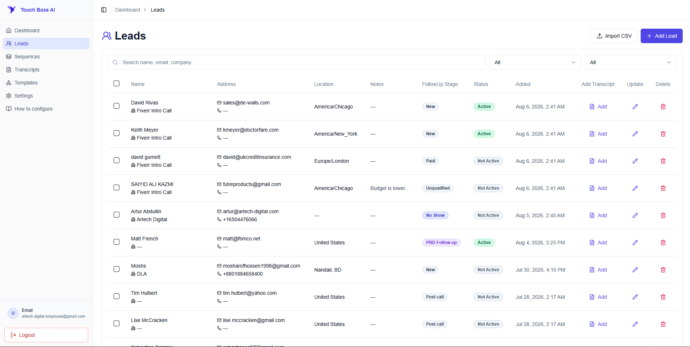

Post-call follow-up
Turn every sales call into a consistent follow-up sequence.
Import your leads, connect Fathom, select what happened on the call, and launch coordinated outreach across email, WhatsApp, SMS, and AI voice.
Stay in front of every opportunity, without manually chasing every lead.
Built for agencies, consultancies, and service businesses that sell through discovery calls, demos, and proposals.
Select the call outcome
Checks whether they are still interested, and gives them a clear way to reschedule.
| Channel | Touchpoint | When |
|---|---|---|
| Sorry we missed you | shortly after | |
| Reminder | next day | |
| SMS | Rescheduling link | +2 days |
| Final check-in | +5 days |
Runs until the lead schedules the next conversation to review the PRD, plan, or proposed solution.
| Channel | Touchpoint | When |
|---|---|---|
| Next step, summarised | same day | |
| Reminder | +2 days | |
| SMS | Short follow-up | +4 days |
| AI voice | Call if still no response | +6 days |
Stays present after the proposal without relying on someone remembering every follow-up.
| Channel | Touchpoint | When |
|---|---|---|
| Proposal follow-up | +2 days | |
| Short check-in | +4 days | |
| SMS | Reminder | +6 days |
| AI voice | Request an update | +8 days |
| Decision and next step | +11 days |
You define the strategy once. The system executes it consistently for every lead.
01 — The gap
The call went well. Then the lead went quiet.
Most opportunities are not lost during the sales call. They are lost in the days that follow.
- A promising lead says they will get back to you.
- A second meeting needs to be scheduled.
- A proposal is sent, but nobody follows up consistently.
- A no-show stays buried in a spreadsheet.
- Your team gets busy, and the conversation loses momentum.
Calendar reminders
Tell you to follow up.
Spreadsheets
Tell you who the lead is.
Generic email sequences
Send messages.
But none of them connects what happened during the call with what should happen next.
02 — The approach
Follow-up automation built around your sales conversations.
Follow-Up AI turns each stage of your sales process into a reusable, multi-channel sequence. After a call, simply select the outcome.
Follow-Up AI then schedules the appropriate touchpoints across the channels you choose. Your team defines the strategy once. The system helps execute it consistently for every lead.

Watch it work
See the whole flow in one run.
03 — How it works
Five steps from spreadsheet to running sequence.
-
01
Step one
Import your leads
Upload a spreadsheet containing each lead's details. No complicated migration is required to get started.
First and last name Email address Phone numberfollowupaitool.com/dashboard/leads
Every imported lead in one table: searchable, filterable, with follow-up stage and status editable inline. -
02
Step two
Connect Fathom
Connect your Fathom account so your follow-up workflow can use the notes and context captured during the conversation.
followupaitool.com/dashboard/transcripts
Meetings pulled straight from Fathom. Open the full transcript, or attach it to the lead it belongs to. -
03
Step three
Select the call outcome
Choose what happened, and the follow-up path follows from there.
No-show Discovery completed Second meeting required PRD presented Proposal sent Waiting for a decision Custom scenariofollowupaitool.com/dashboard/sequences/new
Pick the situation and the goal, then set tone, intensity, cadence and channels. The summary on the right updates as you go. -
04
Step four
Launch the right sequence
Choose a predefined sequence or create your own: which channels to use, what messages to send, when each touchpoint should happen, and how long the follow-up should continue.
followupaitool.com/dashboard/sequences
Each sequence shows its lead, template, step count and per-channel progress, and a toggle to start or pause it. -
05
Step five
Keep the conversation moving
Follow-Up AI executes the scheduled sequence so leads continue hearing from you across multiple channels, not just through another email sitting in their inbox.
followupaitool.com/dashboard/how-to-configure
Review or regenerate any step, then pause and resume it any time. followupaitool.com/dashboard
Volume over time, and sent vs failed by channel.
04 — Channels
One sequence. Multiple ways to reach the lead.
Use one channel, or coordinate several within the same sequence.
Detailed follow-ups, meeting recaps, proposal reminders, and next-step requests.
Continue the conversation through a channel that feels direct and personal.
SMS
Short reminders and simple calls to action that are easy to respond to.
AI Voice
An AI-powered follow-up call with a recording and transcript for future reference.
05 — Scenarios
Built for the moments where deals usually stall.
Each of these has a sequence behind it. Switch between them at the top of the page to see the touchpoints.
No-show
When a lead misses the call
Automatically begin a sequence that checks whether they are still interested and gives them a clear way to reschedule.
Second meeting
When the next meeting needs scheduling
Follow up after the discovery call until the lead schedules the next conversation to review the PRD, plan, or proposed solution.
Awaiting decision
When a proposal is awaiting a decision
Stay present after presenting the proposal without relying on someone from your team to remember every follow-up.
06 — Positioning
Not another CRM. Not another generic email sequencer.
CRMs help you store lead information. Email tools help you send emails. Follow-Up AI is designed for what happens between sales conversations. It combines:
- Lead information from your spreadsheet
- Conversation context from Fathom
- Your sales process and follow-up scenarios
- Multi-channel outreach
- Scheduling across multiple days or weeks
So your follow-up reflects where the lead actually is in the sales process.
Origin
Built from a workflow we needed ourselves.
We originally created Follow-Up AI for our own agency.
We were managing leads in spreadsheets, holding discovery calls, preparing PRDs, presenting proposals, and manually reminding prospects to take the next step.
The problem was not knowing that we needed to follow up. The problem was doing it consistently, through the right channel, with the right context, for every opportunity.
Follow-Up AI turns that manual process into a repeatable system.
07 — Pilot programme
Join the Follow-Up AI Pilot.
We are inviting a limited number of agencies and service businesses to test Follow-Up AI using their real sales workflows. During the pilot, we will help you:
- 01Import your existing lead list
- 02Connect your Fathom account
- 03Map your most common post-call scenarios
- 04Create your initial follow-up sequences
- 05Configure email, WhatsApp, SMS, and AI voice touchpoints
- 06Test the system with real opportunities
- 07Share feedback that helps shape the product
No complicated migration. Start with the leads and sales process you already have.
08 — FAQ
Frequently asked questions
Is Follow-Up AI a CRM?
No. It is a post-call follow-up automation platform. It can work with lead information imported from your existing spreadsheet without requiring you to replace your current sales system.
Do I need to use every communication channel?
No. You decide which channels belong in each sequence. A sequence can use one channel or combine email, WhatsApp, SMS, and AI voice.
Can I create different sequences for different call outcomes?
Yes. You can create separate sequences for no-shows, second-meeting scheduling, proposal follow-up, decision follow-up, and other stages of your sales process.
How does the Fathom integration work?
Fathom provides notes and context from the sales conversation, helping keep the follow-up connected to what was discussed during the call.
Can I control the timing of each message?
Yes. You decide when every touchpoint is scheduled and how long each sequence should continue.
What happens during an AI call?
The system can place an AI-powered follow-up call and provide a recording and transcript for reference.
Who is the pilot designed for?
The pilot is best suited for agencies, consultancies, and service businesses that generate leads, hold sales calls, send proposals, and need to follow up several times before receiving a decision.
Your next client may already be in your spreadsheet.
The opportunity has not necessarily disappeared. It may simply be waiting for the next follow-up.